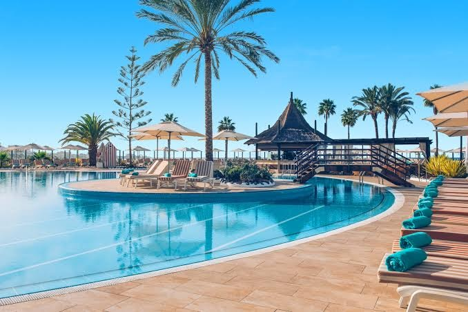
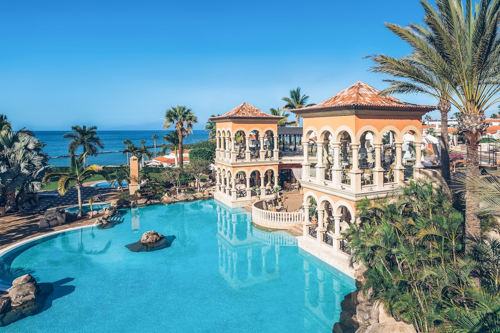

Principales Alojamientos en Tenerife
En Tenerife puedes disfrutar de una amplia gama de hoteles de gran calidad a costes no muy elevados.

Iberostar Selection Anthelia
Iberostar Selection Anthelia está entre los mejores Todo Incluido de España y es un hotel extraordinario para familias.
Dreams Jardin Tropical
Dreams Jardín Tropical Resort & Spa es un resort en Costa Adeje, Tenerife, en primera línea de playa, que ofrece un ambiente tranquilo donde podrá disfrutar de unas relajantes vacaciones con momentos inolvidables.
Gran Melia Palacio De Isora
A orillas del Océano Atlántico y a las faldas del Teide le espera una experiencia mágica en medio del magnetismo natural de Tenerife. Un resort cinco estrellas que recoge la belleza natural de la isla y presume de la piscina infinita más larga de toda Europa.
Meliá Jardines del Teide
Este hotel solo adultos en Canarias no solo goza de una excelente ubicación en la zona sur de Tenerife, gracias a sus modernas instalaciones marca un nuevo estándar de lujo y confort en toda la isla.
Santa Barbara Golf And Ocean Club
Disfrutarás de agradables habitaciones que incluyen televisor de pantalla plana, frigorífico y cocinita, y podrás estar conectado durante tu estancia, ya que Santa Barbara Golf & Ocean Club Hotel ofrece wifi a los huéspedes

Iberostar Grand El Mirador
Iberostar Grand El Mirador es un hotel diseñado con una cuidada y romántica decoración y repleto de detalles que te harán sentir como en un cuento de hadas. Se encuentra en la milla de oro de Costa Adeje, al pie de la playa del Duque y muy cerca del campo de golf.
Vincci Selección La Plantación Sur
Este hotel, de estilo colonial, está situado en Costa Adeje y ofrece un spa de lujo y unas vistas magníficas al océano Atlántico. El hotel también alberga 5 piscinas rodeadas de soláriums y jardines.
Bahía del Duque
Este lujoso complejo hotelero, rodeado por 6 hectáreas de jardines subtropicales, ofrece vistas a la playa Duque de Tenerife. Cuenta con 5 piscinas al aire libre, gimnasio y habitaciones elegantes con balcón privado.

Hard Rock Hotel Tenerife
Disfruta de la magia de Tenerife y sumérgete en un ambiente incomparable con impactantes vistas al océano Atlántico, una gran variedad gastronómica y un spa que lo tiene todo para desconectar. Ven con tu familia, tus amigos o incluso tu perro, ¡sois todos bienvenidos!